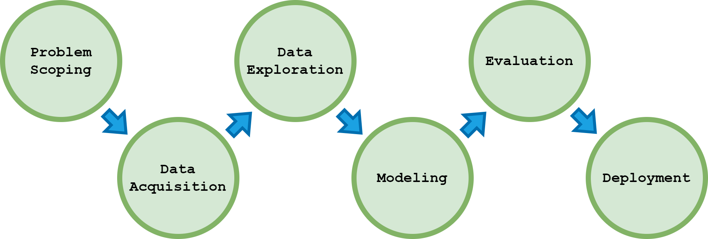
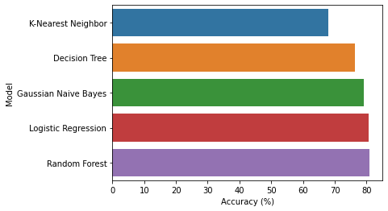
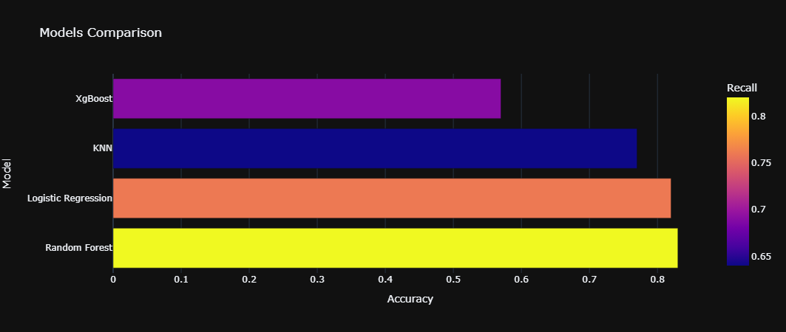
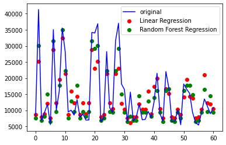

Loan approval is a popular issue in the credit/banking industry. Loan approval in commercial banks is one of the challenges affecting operational financial processes due to inaccurate estimates or lack of information. Commercial banks usually receive many loan applications. Many of them are rejected for various reasons, such as high loan balances, a low-income level, or too many inquiries regarding one's credit report. Analyzing these applications manually is mundane, error-prone, and time-consuming.
Fortunately, machine learning helps us with this and almost all commercial banks can do it nowadays. In this project, we have created an automated loan approval predictor using machine learning techniques, just like real banks do.
The dataset used in this project comes from the Loan Predication dataset from Kaggle. Here is the [Link].
The approach to solve this case is done by applying the AI Project Cycle. The schematic is shown in Figure 1. The stages of data acquisition, data exploration, modeling, and evaluation are described in a notebook that has been provided.
Gambar 1. AI Project Cycle Pipeline
1. Problem Scoping
In problem scoping, we apply the 4Ws problem canvas technique (What, Who, Where, and Why). This is to determine the boundaries of the problem to be solved. Based on the background of the Loan Approval problem, we can make our problem scoping as follows:
1. What (problem that arises): Difficulty in detecting a person's credit score for loan approval.
2. Who (stakeholders in this case): Bank
3. Where (where the problem arises): When the customer has applied for a loan
4. Why (a solution to solve the problem): Help predict and classify the candidate's loan status.
2. Solution Approach
When building this loan approval predictor, we perform several steps such as converting categorical features to numerical, imputation of missing values, and determination of features used to build the model. We completed it with some machine learning models to predict whether a person's loan application will be approved or not with some information about the person. Result of several methods is shown by Figure 2. 80.96% is the best we could get from this data using a Random Forest model.
Figure 2. Accuracy of several algorithms used.
Insurance fraud is an illegal and unethical activity carried out systematically for financial benefit. It is a critical problem for insurance companies as it causes unnecessary spending of billions of dollars annually. This phenomenon is still not handled optimally. The current identification process still uses a traditional approach that takes a long time and is inadequate. Therefore, insurance companies need more effective ways to solve this problem. One solution is the application of machine learning in its detection.
The data used in this study are secondary data taken from Kaggle with the title Auto Insurance Claims Data made by B. Shah. You can access data source [Here].
1. Problem Scoping
In problem scoping, we apply the 4Ws problem canvas technique (What, Who, Where, and Why). This is to determine the boundaries of the problem to be solved. Based on the background of the insurance fraud problem, we can make our problem scoping as follows:
1. What (problem that arises): Not optimal detection of insurance claim fraud.
2. Who (stakeholders in this case): Insurance Company
3. Where (where the problem arises): When the customer has applied for a insurance claim
4. Why (a solution to solve the problem): Help detect and classify the candidate's insurance claim status.
2. Solution Approach
Figure 3. Univariate Analysis.
When building an insurance claim approval detector, we perform several steps. We supplement this with several machine learning algorithms to detect whether a person's insurance application is fraud or not with some information about the person. 83% is the best we can get from this data using Random Forest model. We can see other result models in Figure 4.
Figure 4. Comparison for Several Algorithms.
Each car has a different price. The difference depends on several things. This project will help predict the price based on parameters as well as engineering features.
This dataset consist of data From 1985 Ward's Automotive Yearbook. You can access the dataset in Here. This data set consists of three types of entities:
(a) the specification of an auto in terms of various characteristics,
(b) its assigned insurance risk rating,
(c) its normalized losses in use as compared to other cars.
The second rating corresponds to the degree to which the auto is more risky than its price indicates. Cars are initially assigned a risk factor symbol associated with its price. Then, if it is more risky (or less), this symbol is adjusted by moving it up (or down) the scale. Actuarians call this process "symboling". A value of +3 indicates that the auto is risky, -3 that it is probably pretty safe.
The third factor is the relative average loss payment per insured vehicle year. This value is normalized for all autos within a particular size classification (two-door small, station wagons, sports/speciality, etc.), and represents the average loss per car per year.
1. Problem Scoping
In problem scoping, we apply the 4Ws problem canvas technique (What, Who, Where, and Why). This is to determine the boundaries of the problem to be solved. Based on the background of the insurance fraud problem, we can make our problem scoping as follows:
1. What (problem that arises): Each car has a different price.
2. Who (stakeholders in this case): Customer.
3. Where (where the problem arises): When the customer want to buy a car
4. Why (a solution to solve the problem): Help predict and forecast the car price.
2. Solution Approach
When building a car price prediction model, we perform several steps such as data preparation, data preprocessing, data modeling, model testing, and model evaluation. We supplement this with some machine learning algorithms to predict car prices. 0.86 is the best R2 score we can get from this data using the Random Forest Regression model. We can see the prediction comparison of each model in Figure 5.
Figure 5. Predict Result of Several Methods.
created with
Website Builder Software .